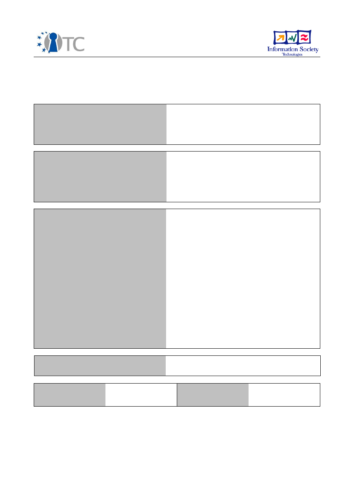
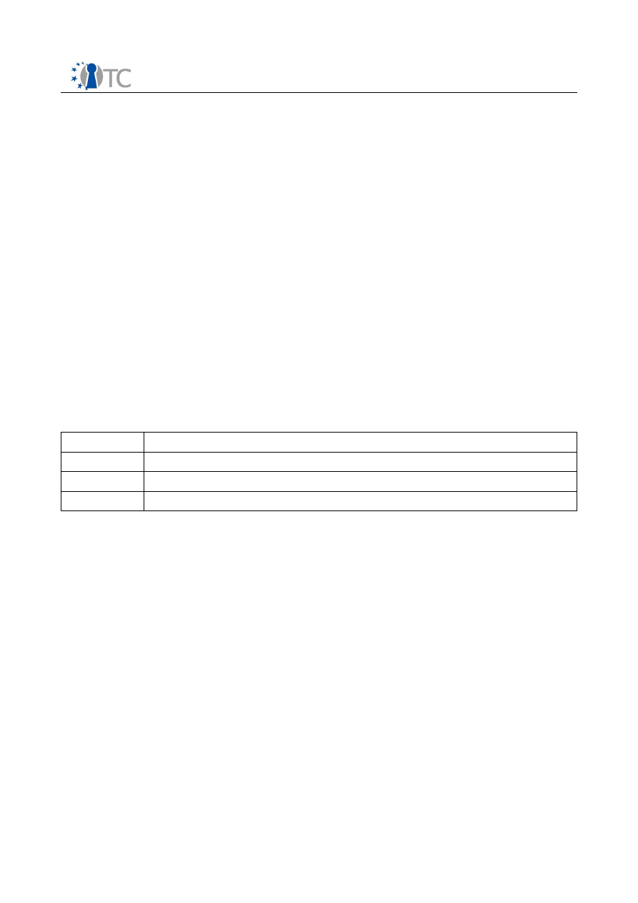
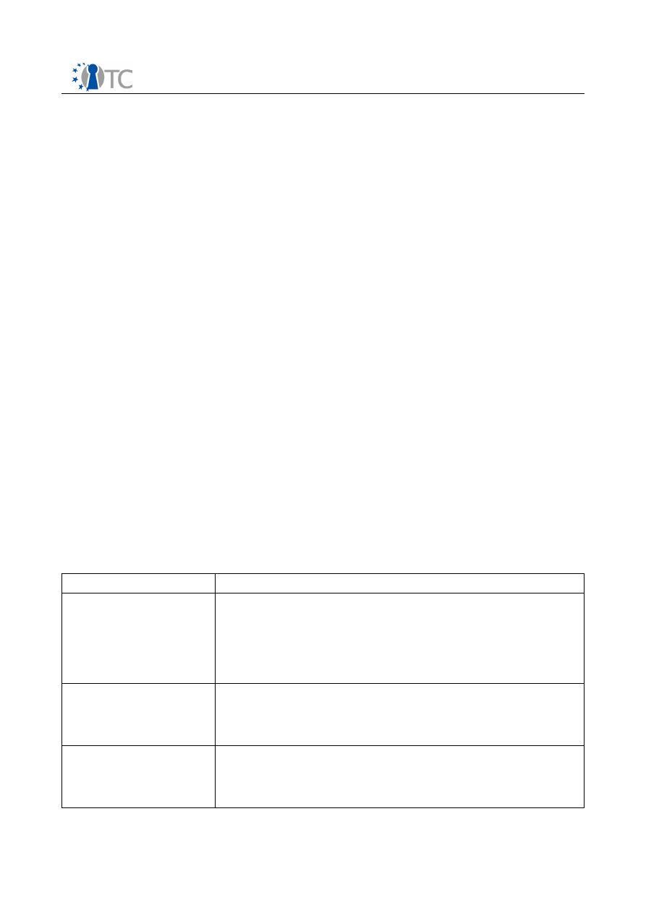
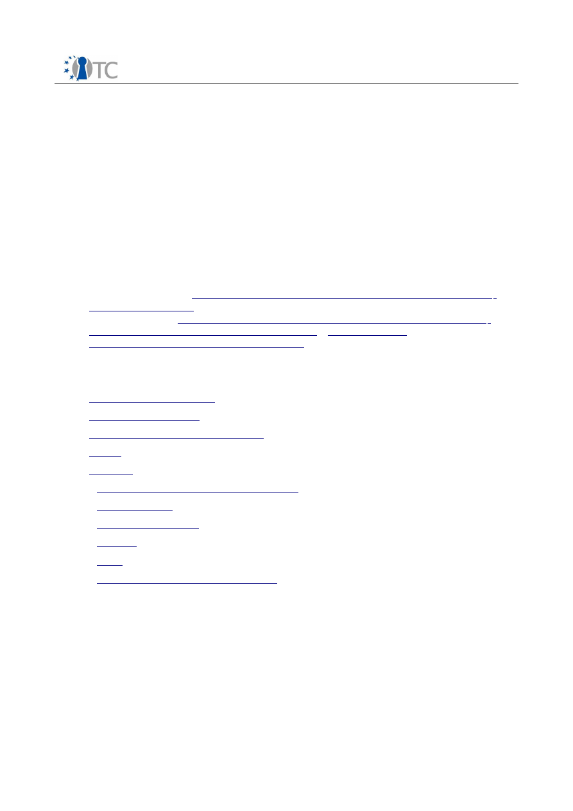

D04.4 Initial prototype L4-based TC system
Project number
IST-027635
Project acronym
Open_TC
Project title
Open Trusted Computing
Deliverable type
Report (see p 84/85 Annex 1 - Nature)
Deliverable reference number
IST-027635/DD04.4/FINAL|1.0
Deliverable title
D04.4: Initial prototype L4-based TC system
WP contributing to the deliverable
WP4
Due date
Feb 2007 - M16
Actual submission date
April 2007
Responsible Organisation
TUD
Authors
TUD (Bernhard Kauer, Carsten Weinhold,
Christelle Braun, Alexander Böttcher),
HP (David Plaquin)
Abstract
This report describes an initial prototype of
an L4-based trusted operating-system layer.
The prototype is based on a snapshot of the
L4 software components that we provide in
OpenTC and it includes a first
implementation of the Basic Management
Interface (BMI), facilities to access TPMs, and
a trusted boot loader. This deliverable
includes the full source code of the L4-based
prototype as well as compiled binaries that
have been integrated into a demonstrator in
the form of a bootable CD image.
Keywords
WP4, prototype, microkernel, L4, L4Linux,
BMI, OSLO
Dissemination level
Public
Revision
FINAL|1.0
Instrument
IP
Start date of the
project
1
st
November 2005
Thematic Priority
IST
Duration
42 months
D04.4: Initial prototype L4-based TC system
FINAL|1.0
If you need further information, please visit our website
www.opentc.net
or contact
the coordinator:
Technikon Forschungs-und Planungsgesellschaft mbH
Richard-Wagner-Strasse 7, 9500 Villach, AUSTRIA
Tel.+43 4242 23355 –0
Fax. +43 4242 23355 –77
Email
coordination@opentc.net
The information in this document is provided “as is”, and no guarantee
or warranty is given that the information is fit for any particular purpose.
The user thereof uses the information at its sole risk and liability.
Open_TC Deliverable D04.4
2/13

D04.4: Initial prototype L4-based TC system
FINAL|1.0
Table of Contents
1 Introduction .............................................................................................................. 3
2 The Software.............................................................................................................. 3
2.1 L4/Fiasco Microkernel............................................................................................. 3
2.2 Architectures based on L4/Fiasco........................................................................... 4
2.3 L4Env..................................................................................................................... 4
2.4 L4Linux................................................................................................................... 4
2.5 BMI – The Basic Management Interface.................................................................. 4
2.6 STPM...................................................................................................................... 5
2.7 IPCMon................................................................................................................... 5
2.8 OSLO...................................................................................................................... 6
2.9 Summary of Work Done Within OpenTC................................................................. 6
3 Demo......................................................................................................................... 8
3.1 General Remarks.................................................................................................... 8
3.2 Booting IPCMon Test.............................................................................................. 8
3.3 Booting STPM Test.................................................................................................. 8
3.4 Booting BMI Test.................................................................................................... 9
3.5 Booting OSLO Test................................................................................................. 9
3.6 Booting Integrated Demo of the Complete Prototype............................................ 9
3.6.1 L4Con and Run.................................................................................................. 9
3.6.2 STPM, BMI and IPCMon test............................................................................. 10
3.6.3 L4Linux and Networking.................................................................................. 10
4 Development........................................................................................................... 10
5 Outline – further steps............................................................................................. 11
6 List of Abbreviations ............................................................................................... 12
7 References............................................................................................................... 12
Open_TC Deliverable D04.4
3/13
D04.4: Initial prototype L4-based TC system
FINAL|1.0
1
Introduction
The WP4 work package of the OpenTC project aims to build two alternative trusted
operating system (OS) layers that provide isolation and protection mechanisms based
on virtualization. Both layers will have an interoperable Basic Management Interface
called BMI with common semantics for policies and configuration data in order to
manage protection domains. In these protection domains, applications and OSes such
as virtualized Linux instances are executed and protected from each other.
One of these OS layers is based on an L4 microkernel, the other one is based on the
Xen VMM. This report describes the initial prototype of the L4-based trusted OS layer.
It documents the basic functionality for the trusted OS layer that we developed within
the OpenTC project, such as communication control and facilities to access TPMs as
well as a rudimentary implementation of the BMI.
2
The Software
This deliverable is based on the February 2007 OpenTC snapshot of our
L4
software,
which is publicly available at the OpenTC project website
[3]
. The provided source tree
contains the
L4/Fiasco
microkernel, the
L4Env
-core packages that provide services
on top of this microkernel, and a paravirtualized Linux kernel called
L
4
Linux
.
Additionally, we present in this deliverable the first prototype of the L4 BMI
implementation, an L4Env service providing access to TPM interfaces called STPM, and
our trusted boot loader Open Secure LOader (OSLO). In the next sections, we briefly
describe the aforementioned software and give an overview of the components that
were newly developed or modified for OpenTC. Where applicable, we refer to further
documentation, before we present a demonstrator of the L4-based trusted OS layer in
the next chapter.
2.1 L4/Fiasco Microkernel
L4
is a second-generation microkernel originally developed by Jochen Liedtke. The L4
philosophy is to implement only a minimal and essential set of functionality in kernel
space in order to facilitate the construction of robust and tiny kernels. The L4
mechanisms provided to user level tasks are isolation of tasks through separation of
address spaces, execution instances known as threads, and primitives for inter
process communication (IPC) that allow threads to cooperate. In contrast to monolithic
kernels such as Linux, all other required functionality including memory and IO
management, device drivers, file systems, and complex protocol stacks (e.g., for
networking) are implemented as services running as isolated L4 user-level tasks.
Nowadays, the name L4 also stands for a whole family of microkernels that implement
various versions of the L4 application binary interface (ABI). One of these
implementations is
Fiasco
, which is being developed and maintained at TU Dresden.
Fiasco is sometimes referred to as
L4/Fiasco
to emphasize the relation to L4. TU
Dresden is maintaining L4/Fiasco to improve stability and performance. Furthermore,
there are ongoing efforts to port it to more computer architectures and it is extended
with security features such as IPC monitoring, which supports the restriction of IPC-
Open_TC Deliverable D04.4
4/13

D04.4: Initial prototype L4-based TC system
FINAL|1.0
based communication among user level applications.
2.2 Architectures based on L4/Fiasco
L4/Fiasco is real-time capable and supports parallel execution of real-time and time-
sharing applications. This includes
L
4
Linux
,
a paravirtualized version of Linux that is
capable of executing on the L4 microkernel. It can run unmodified Linux programs.
Furthermore, the
Nizza
Secure-System
Architecture
[15] is based on a microkernel
-- in our implementation on L4/Fiasco -- and allows execution of security-critical
applications in parallel to untrusted applications such as one or more L
4
Linux
instances.
2.3 L4Env
L4Env
comprises a set of user-level services and libraries that facilitate the use of
L4/Fiasco and provide a basis for building an operating-system on top of L4. It provides
memory management with dataspaces, management of tasks, threads and IO
resources as well as services to start new applications. The development environment
for L4Env includes DICE [14], an IDL compiler used to automatically generate stub
code for remote function calls based on Interface Description Language (IDL) files.
These IDL files specify the interfaces provided by L4Env services as a set of functions,
which which applications can call remotely across address space boundaries.
Documentation of the L4Env is available at our L4Env webpage [5] and in the
documentation directory (doc/) of the binary version of the OpenTC snapshot. The
L4Env-core interface document [6] describes which functionality of the L4Env is
publicly supported and which functions an application developer should not rely upon.
2.4 L
4
Linux
L
4
Linux [13] is a port of the Linux kernel to the L4 microkernel ABI and L4Env. As a
paravirtualized Linux running on top of the microkernel, L
4
Linux is executed in ring 3
of the processor without privileges for accessing hardware IO ports or attaching to
IRQs, and without the permission to perform privileged operations such as interrupt
masking. Thus, multiple instances of L
4
Linux can run side-by-side with other L4
applications such as real-time or security components. Nevertheless, L4Env services
can grant specific L4Linux instances the necessary rights to access certain hardware
devices directly (e.g., a hard disk controller).
Because the paravirtualization only affects the inner functions of the kernel, L
4
Linux
provides binary compatibility to existing x86 Linux applications and can therefore be
used with any PC-based Linux distribution.
L
4
Linux is regularly updated to the latest Linux kernel version. Within this deliverable
the version from the February 2007 OpenTC snapshot is used, which is 2.6.19.
2.5 BMI – The Basic Management Interface
The cbbmi package provides a first view on the BMI implementation for L4Env. It is not
yet feature complete with regard to the current status of the BMI specification, but
Open_TC Deliverable D04.4
5/13

D04.4: Initial prototype L4-based TC system
FINAL|1.0
mainly a snapshot of the current development. In this early stage, the BMI supports
the following operations:
•
start a protection domain (PD) such as L
4
Linux or other L4 applications via the
L4 Loader or a guest L
4
Linux
•
send a shutdown signal to an L
4
Linux PD
•
kill a PD
•
list all started PDs
The user manual of the cbbmi package describes the structure of the BMI
implementation as well as the command line parameters of the bmic command-line
application. It is available in the documentation directory of the cbbmi package [4].
2.6 STPM
STPM is a server that provides a /dev/tpm like interface for other L4 components. It
reuses Linux-compatible device drivers for TPMs, mainly written by TUD, by using the
Device Driver Environment (DDE) for L4. DDE provides a Linux kernel-like environment
so that drivers originally written for Linux can be isolated in L4 tasks without the need
of a complete Linux kernel. For a deeper explanation of the DDE ideas see [1,2].
The following drivers are stored in the contrib/ directory of the sources and compiled
into the STPM server:
tpm/
The original Atmel TPM driver by IBM
inftpm/
A driver for v1.1 Infineon TPMs by TUD
oslo/tis.c
A driver for v1.2 TPMs of Atmel, Infineon, STM and Broadcom by TUD
tis_oslo/
Wrapper for the OSLO TIS driver with a Linux driver interface by TUD
The main difference between these drivers and those available in the 2.6.x Linux
Kernels is that the former do not require ACPI support in order to detect the which
particular TPM is installed. ACPI support is currently still missing in the L4 software
stack. Instead, these drivers probe for supported TPMs.
STPM is reported to work with the following TPMs:
•
Atmel v1.1 and v1.2
•
Infineon v1.1 and v1.2
•
STM v1.2
•
Broadcom v1.2
STPM will be the basis for TPM support in the final BMI implementation.
2.7 IPCMon
IPCMon provides IPC control for L4/Fiasco at the level of L4 tasks. It consists of a kernel
extension that adds support for task capabilities to Fiasco and a user-level server
called
ipcmon
that manages simple access policies and handles capability faults.
IPCMon was developed within the partner project EMSCB and will be used as the basis
Open_TC Deliverable D04.4
6/13

D04.4: Initial prototype L4-based TC system
FINAL|1.0
to implement access control in the BMI.
2.8 OSLO
The Open Secure LOader (OSLO) is the first publicly available boot loader that
leverages AMDs
skinit
instruction to create a dynamic root of trust as detailed in the
TCG Specification. An important advantage over a static root of trust is that the size
and complexity of the trusted computing base (TCB) can be reduced. As this
instruction can be executed after the initial boot-up phase performed by the BIOS, it is
possible to keep the BIOS and the actual boot loader (e.g, GRUB) out of the TCB. OSLO
and all trusted L4 components are loaded using an untrusted boot loader that starts
OSLO, which in turn puts the system into a trusted state using
skinit
and then passes
control to the L4/Fiasco boot strapper.
OSLO was developed by TUD within OpenTC specifically to use the new hardware
features of the AMD Athlon64 X2 processors. Due to its small size (approximately
1,000 lines of code resulting in a 4 kB of binary code), it should be feasible to review
and verify the correctness of OSLO.
The latest version of OSLO is part of the contrib/ directory in the STPM package,
however it can also be found at [7].
2.9 Summary of Work Done Within OpenTC
In the remainder of this chapter, we summarize the work that we did within WP4 of the
OpenTC project. First of all, TUD invested considerable resources into maintenance of
all the software components that we provide as part of our regular OpenTC snapshots.
This work involved various of bug fixes and improvements of documentation.
Furthermore, the prototype of the L4-based trusted OS layer contains newly added
components and modifications to L4/Fiasco, L4Env, and L
4
Linux that we did based on
requirements and on feedback from other OpenTC partners:
Source directory
Description of new functionality and modifications
l4linux-2.6/arch/l4/
●
implementation of software suspend in L4Linux as
required for future OpenTC demonstrators
●
improved support for multiple L4Linux instances
running concurrently (ability to transfer FPU states,
control assignment of ISA DMA memory)
●
several bug fixes and minor improvements
kernel/fiasco/
●
faster IPC path, more efficient use of kernel memory
●
support to transfer FPU states
●
support for KIP memory descriptors
●
several bug fixes
l4/pkg/ore/
l4linux-2.6/drivers/net/
l4ore.c
●
major functional improvements: support for loopback-
only networking, multiple ORe instances providing
isolated virtual LANs
●
several bug fixes
Open_TC Deliverable D04.4
7/13
D04.4: Initial prototype L4-based TC system
FINAL|1.0
l4/pkg/cbbmi/
●
newly implemented
l4/pkg/libsigma0/
l4/pkg/sigma0/
●
MTRR support (cacheable memory-mapped I/O)
●
use of KIP memory descriptors for improved
robustness
l4/pkg/stpm/
●
major functional improvements: OSLO-based TIS
driver, Linux wrapper for TIS driver
l4/pkg/stpm/contrib/oslo
/
●
newly implemented
l4/pkg/l4io/
●
support for mapping TPM TIS area
l4/pkg/ipreg/
●
newly implemented
l4/doc/dev-overview/
●
new document on how to get started with L4
development
Open_TC Deliverable D04.4
8/13

D04.4: Initial prototype L4-based TC system
FINAL|1.0
3
Demo
3.1 General Remarks
The provided bootable CD image can be run on real hardware or within a virtualization
software such as QEmu [8] or VMware [9]. Booting is done with GRUB 0.97 [10,11].
The serial port can be used for debugging purposes, see [12] for details.
Note however that the delivered software does not have product quality, but is rather
a proof of concept that shows the current status of the implementation as well as
future directions of development.
In the following sections, we describe the different choices the user is presented in the
GRUB boot loader's menu when booting from the demo CD.
3.2 Booting IPCMon Test
The IPCMon test shows that IPC in L4 can be restricted by using IPCMon. This test
loads, beside the
ipcmon
server, two applications:
ipctest1
and
ipctest2
. The former
periodically outputs log messages. The latter revokes the rights of
ipctest1
to
communicate with the log server after a few seconds. The log output after revokation
is something like:
ipcmon | ipcmon_pagefault(): ipc D -> 7 DENIED!
*ipctest1| main(): I'm still printing stuff to LOG.
In the first line IPCMon reports that it denied the communication from
ipctest1
to the
log server, which has task ID 7. The star at the beginning of the second line indicates
that the log output is not printed via the now unreachable log server, but the kernel
debugger instead.
3.3 Booting STPM Test
The STPM test demonstrates that a TPM can be accessed by L4 programs. It runs the
STPM server together with a program called
tpmdemo
. The interesting lines of the
output look similar to those below:
stpm | tis_oslo: Atmel rev: 2
tpmdemo | TPM version 1.1.0.0
tpmdemo | 24 PCR registers are available
tpmdemo | PCR-00: 99 37 C4 68 E2 12 7D 16 BF CB D8 14 AC FC F0
The first line shows that the
tis_oslo
driver has found an Atmel TPM. After that, the
number of the PCRs is shown and their values are dumped. Other output, such as the
key handles or information about the endorsement key is also displayed.
Open_TC Deliverable D04.4
9/13

D04.4: Initial prototype L4-based TC system
FINAL|1.0
3.4 Booting BMI Test
The BMI test starts the same applications as before, but uses the
cbbmi
server and
bmic
tool to start them. It tests the ability to start new applications with the BMI
interface.
bmic | (bmilib) get_data(stpm$)
cbbmi | bmi_setImage_component(): (bmi)############data:(stpm$)
cbbmi | startPD_intern(): (bmi) INIT DATANEW(stpm)
The first line shows the command line to start with the bmic tool “
stpm
”, the second
line shows that the
cbbmi
server received the BMI
setImage()
call and the last line is
from the
startPD()
function of the BMI.
3.5 Booting OSLO Test
This test just boots OSLO alone. It can be used to check whether OSLO supports a
particular machine. The interesting lines on a machine not being an SVM platform are:
OSLO: No SVM platform
PAMPLONA: no ext cpuid
PAMPLONA: no module to start
The last line is always present in this test, as there is nothing started afterwards.
3.6 Booting Integrated Demo of the Complete Prototype
The full demo resembles all the aforementioned single tests into an integrated
scenario.
3.6.1 L4Con and Run
The demo is booted into L4con, a graphical console that can be used to multiplex the
framebuffer output of multiple applications. Please note that L4con is not supported in
OpenTC and used here only to ease the visualization of various running L4Linux
instances.
Two applications are running:
logcon
and
run
. The former is showing the log output,
also visible on the serial line. The latter can be used to start new applications.
Switching between the L4con consoles is done by using the shift and the
function_keys e.g. Shift+F1 to switch to
logcon
.
The help of
run
can be invoked by typing the single key
h.
New applications can be
loaded by typing
l.
An L4Linux can be started by loading
lx.conf
.
Open_TC Deliverable D04.4
10/13

D04.4: Initial prototype L4-based TC system
FINAL|1.0
3.6.2 STPM, BMI and IPCMon test
The STPM test can be performed here by executing:
bmic --start stpm
bmic --start tpmdemo
The output is shown on the serial port or on logcon. The
bmic
tool can be used either
via
RUN
or within an L
4
Linux shell.
The IPCMon test runs similarly by executing:
bmic --start ipcmon
bmic --start ipcmon_test.cfg
3.6.3 L
4
Linux and Networking
Multiple L
4
Linux instances could be started via
bmic --start-linux vmlinux 15
The last parameter gives the amount of memory they can use in megabytes. The one
before the name of the kernel.
The started L
4
Linux instances are connected via our virtual network switch (ORe). A
broadcast ping such as
ping 192.168.0.255
can be used to show which L4Linuxes are started.
It is also possible to log into these virtual machines via a simple remote shell on port
22. Use for instance
echo cat /proc/cmdline | nc 192.168.0.11 22
to get the commandline of a remote kernel.
There is currently no easy policy enforcement possible to restrict that a L4Linux
instance can connect to ORe. A device abstraction layer in the BMI could be
implemented to simplify the management of the virtual devices. This part of the BMI
could use IPCMon as underlying service.
4
Development
For developing software in the L4 environment the development overview [12] can be
used as a starting point. The document briefly describes and gives pointers to the
needed tools, the test environment and the way to write new components or to build
existing ones.
Open_TC Deliverable D04.4
11/13

D04.4: Initial prototype L4-based TC system
FINAL|1.0
5
Outline – further steps
The next steps are to complete the BMI implementation, so that it meets the final
version of the BMI specification, which is still under development. We will further test
and stabilize our software. Other possible orientations for future research are the field
of dynamic root of trust and new hardware features such as IO-MMUs.
Open_TC Deliverable D04.4
12/13

D04.4: Initial prototype L4-based TC system
FINAL|1.0
6
List of Abbreviations
TPM
Trusted Platform Module
BMI
Basic Management Interface
DICE
IDL Compiler
IPC
Inter Process Communication
L4
A second generation microkernel interface
Fiasco
An implementation of L4 by TUD
PD
Protection domain
L4 ABI
L4 application binary interface
7
References
[1] Christian Helmuth:
"Generische Portierung von Linux-Gerätetreibern auf die
DROPS-Architektur"
- http://os.inf.tu-dresden.de/papers_ps/helmuth-diplom.pdf
[2] Thomas Friebel:
Übertragung des Device-Driver-Environment-Ansatzes auf
Subsysteme des BSD-Betriebssystemkerns
-
http://os.inf.tu-
dresden.de/papers_ps/friebel-diplom.pdf
[3]
TUD OpenTC Snapshot
http://os.inf.tu-dresden.de/opentc/
[4] Basic Management User Manual /src/l4/pkg/cbbmi/doc/bmimanual.pdf
[5]
L4Env – Documentation
http://os.inf.tu-dresden.de/l4env/docu.xml
[6]
L4Env-core Interface
http://os.inf.tu-dresden.de/opentc/download/l4env-core.pdf
[7]
OSLO – The Open Secure LOader
http://os.inf.tu-dresden.de/~kauer/oslo/
[8]
Qemu
http://www.qemu.org/
[9]
Vmware
http://www.vmware.com
[10]
GRUB - The GRand Unified Bootloader
ftp://alpha.gnu.org/gnu/grub/
[11]
GRUB patches
http://os.inf.tu-dresden.de/~adam/grub/
[12]
Developing with L4
http://os.inf.tu-dresden.de/l4env/doc/html/dev-overview/
[13]
L
4
Linux
http://os.inf.tu-dresden.de/L4/LinuxOnL4/
[14]
DICE
http://os.inf.tu-dresden.de/dice/
[15]
Nizza Secure-System Architecture
http://os.inf.tu-
dresden.de/papers_ps/nizza.pdf
Open_TC Deliverable D04.4
13/13
Document Outline